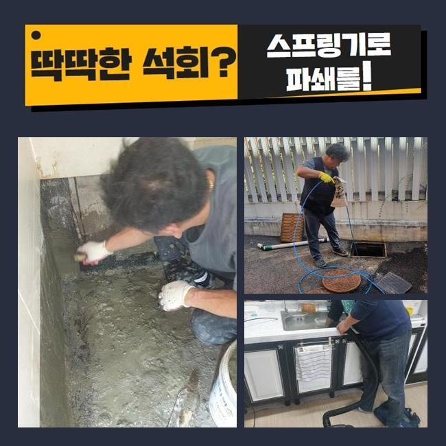
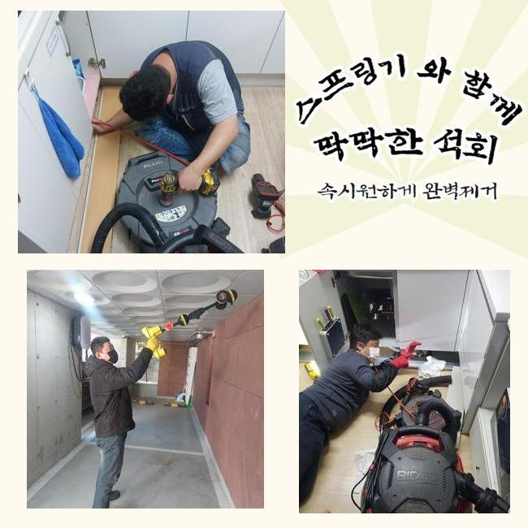
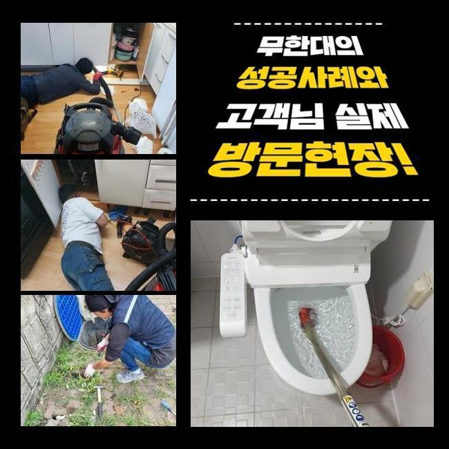
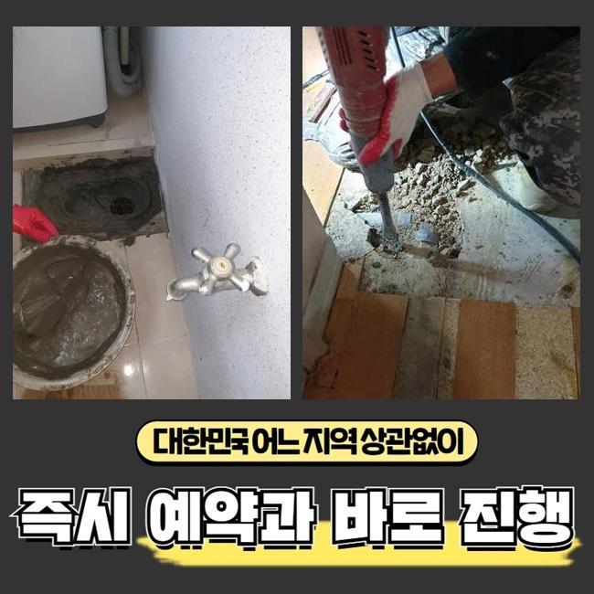
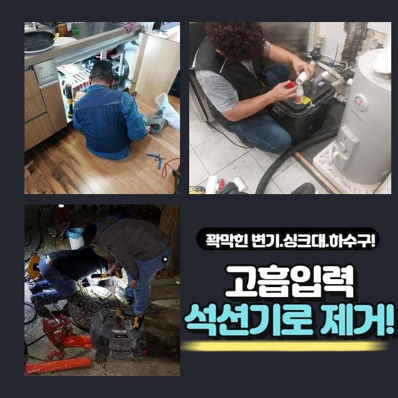
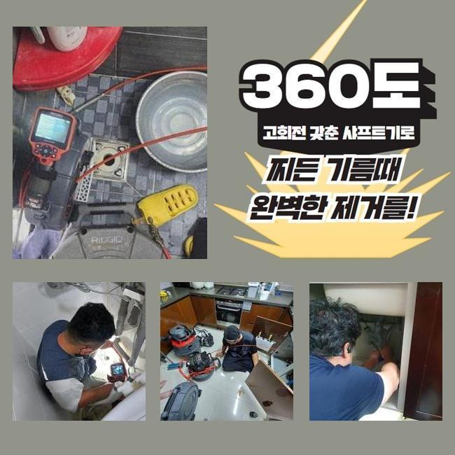
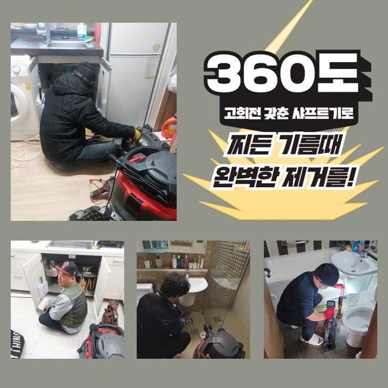

🏠 남동구 장수동씽크대역류 서창2동 배관뚫기 배관전문
용인 남동 싱크대막힘 전문 시공 후기

📋 작업 개요
- 위치: 용인 남동, 남동, 용인
- 서비스 유형: 싱크대막힘, 변기막힘, 배관막힘, 집수정막힘, 역류해결, 뚫는업체, 배관청소, 설비공사
- 작업 일시: 2025. 3. 15. 3:14
- 업체명: 하수구수사대 (010-5615-2118)
🔍 문제 상황
남동구 장수동씽크대역류 서창2동 배관뚫기 배관전문
다세대 주택의 배수라인을 점검하지 않고 사용하면 이물질이 계속해서 내부에 쌓여서 하수시설의 고장이 발견될 경우가 많아져요
사용하고 계시는 하수시설의 사용기간이 오래 된 경우라면 전문업체에 의뢰하셔서 배수구의 컨디션을 미리 파악하는게 안전합니다
이번에 출동한 현장은 의뢰인께서 하수라인이 막혔다고 긴급하게 전화주셨어요
의뢰받은 현장은 마을과 거리가 꽤 되는 외진 곳의 주택이였고 근처에는 캠핑장이 들어와있는 상태였어요
주택을 지으신게 오래되지도 않았지만 바깥에서 역류상황이 반복된다고 걱정하셨어요
확인해봤더니 창고에 설치 되어있는 집수정에서 밖에 위치해있는 정화조쪽으로 유입되는 상황이였습니다
정화조의 위치가 멀었기때문에 이곳에 설치 하셨다고 말씀하셨어요
사례자님께 문제부위를 발견해도 중간부분에 점검구가 없는 경우라면 예상시간이 길어질거라고 설명을 드렸고 동의를 해주셨습니다
집수정에서 내시경기를 넣었으나 오염물질이 너무 많아 더이상 카메라가 들어가지 못했어요

🔎 원인 분석
💡 전문가 진단: 정밀 진단 장비를 사용하여 슬러지의 고착 여부를 판명하고 타격/세척 작업을 실시했습니다.
불순물이 꽉 막혀있는 상황을 고객분에게도 보여드리면서 자세하게 말씀드렸어요
샤프트장치로 시공을 이어나갔어요
장비에 머리카락들과 물티슈들이 계속해서 걸려나왔어요
연립주택의 막힘사고의 원인들은 머리카락과 물티슈가 흔합니다
사례자님께 물티슈와 머리카락은 거름망을 통해 버리시라고 안내를 해드렸어요
화학재질의 물티슈는 종이로 만든게 아닌 플라스틱의 형질이므로 액체에 녹는게 아닙니다
최근 변기에 버려도 된다고 광고하는 물티슈도 있지만 그것 또한 뭉쳐서 사용하면 배수구가 막히면서 결국엔 역류하는 상황이 발생합니다
배수관 속에 있었던 침전물과 섞여 덩어리지면서 막히게 됩니다
사용자는 항상 물티슈같은 오염물질을 분리배출 하셔야 해요!
배수관은 하수를 처리하는 곳인걸 잊지말고 주의해주시고 작은 쓰레기라도 분리하여 배출해주세요

🔧 작업 과정
다음으로 창고쪽에서 내시경 작업들을 마저합니다
배수관이 길어서 내시경기기로 마지막 부분까지 들어갈 수가 없어서 쏜드기기를 사용했어요
막힌 부분쪽에 계속적으로 불순물 제거를 진행했어요
앞에처럼 머리카락등의 이물질이 다량으로 있는걸 직접 보시면서 의뢰인분께서도 작은 일이 아니라는 것을 알고 매우 놀라셨어요
저희 전문업체에 이와같은 막힘사고가 일어나지 않게 할 수 있는 예방법을 알려달라고 하셔서 안내 해드렸어요
보통 사용하시면서 작은 쓰레기 같은건 흘러가면 자연스레 물과 함께 배출된다고 알고 계시지만 기울기가 가파른 경우엔 속에 오염물질이 축적되기 때문에 작은 쓰레기나 조리시에 발생하는 기름들을 그냥 버리면 문제가 생깁니다
내시경장치를 사용해서 이물질들이 모두 배출되었는지 다시 한번 살펴보았습니다
정화조에서 시작하여 집수정까지 전부 체크 하였고 남아있는 불순물 없이 깨끗한 상태가 확인되어 작업을 마무리 했습니다
고객님께도 보여드렸더니 안심 되신다고 하셨어요
대부분은 염산등을 부으면 간단히 뚫을 수 있다고 생각하고 실제로 해보는 분들이 있었지만 추천드리는 방법은 아닙니다
의뢰인분께서 사용을 하시면서 머리카락등이 오염물질을 따로 처리하고 연립주택의 연식이 많이 되었다면 전문 업체에게 맡겨 예방검진을 진행해보는게 좋아요
크게 신경을 쓰지않고 사용하시다가 막힘문제가 발생하여 큰공사를 피할 수가 없어서 금액적으로 부담감이 상승하게 됩니다
어떤일도 마차가지로 하수관도 그냥 방치할수록 금액적인 부담이 커진다는걸 알고 계셔야 합니다
작업이 종료된 후에도 주변의 오염을 정리하고 청소 해드렸어요
하수에서 부패된 냄새가 났으므로 특수한 세제를 도포하고 직접 호스를 끌고와서 전체적으로 청소했습니다
원래 이러한 현장에서 이러한 오염물질까지 저희 전문가들이 특수청소하는 경우는 많지 않아요


✅ 작업 완료
작업한 현장은 오염이 매우 심한편이라서 마무리 지을 수가 없었습니다
저희 전문가는 배수관 속의 머리카락들은 당연하고 하수시설 안의 침전물을 제거하고 하수의 흐름 방향이 제대로 되는 것인지 최종확인을 반드시 진행합니다
의뢰인께서 저희 전문가를 신뢰하고 맡기실 수 있도록 최선을 다할 것이며 관련된 문제를 상세히 알고 싶으신 경우라면 언제든 전화주세요
배수관 문제를 더 나은 방법으로 처리하시려면 최대한 신속한 대응법이 베스트임을 알고 계셔야 합니다
일상에서 위와 같은 문제현상이 발생하지 않아야 하지만 혹시라고 일어났다면 신속하게 전문적인 업체에 연락하셔야 합니다




⚠️ 주방 싱크대 배관 막힘 예방 수칙
- ✅ 기름기가 묻은 식기나 프라이팬은 설거지 전 키친타올로 반드시 기름때를 닦아내세요.
- ✅ 주기적으로 싱크대 개수대에 뜨거운 물을 가득 받아 한 번에 내려 배관 내부 기름을 씻어내세요.
- ✅ 배수구 거름망을 미세한 필터로 사용하시고 음식물 찌꺼기가 틈으로 새어 들지 않게 관리하세요.
- ✅ 베이킹소다와 식초를 뜨거운 물과 함께 일주일에 한 번씩 부어주면 배관 살균과 막힘 예방에 좋습니다.
💡 핵심 정리
- 확실한 장비 작업(내시경 점검 및 샤프트 스케일링)으로 원인을 뿌리 뽑습니다.
- 작업 후 1년 이내에 동일한 부위 재발 시 100% 무상 A/S 서비스를 보장합니다.
- 서울 · 경기 · 인천 전 지역에 24시간 언제든 긴급 출동할 수 있도록 항시 대기 중입니다.
❓ 자주 묻는 질문 (FAQ)
🚨 용인 남동 싱크대막힘 문제로 고민이신가요?
정확한 원인 진단과 확실한 시공으로 재발 없는 해결을 약속드립니다.
24시간 긴급 출동 | 서울 · 경기 · 인천 전지역 | 1년 내 재발 시 무상 A/S